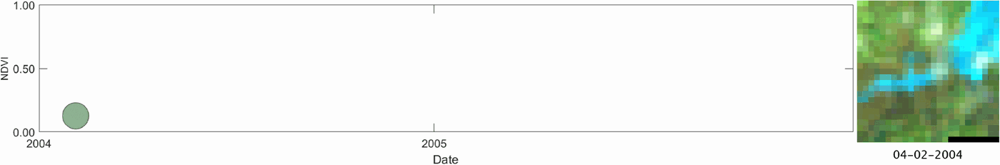

Tidal Wetland Dynamics
I develop dense satellite time-series models, including DECODE, to monitor tidal wetland extent, condition, and disturbance across large regions. A key challenge is to separate real wetland change from tidal-stage and inundation effects in the satellite record.
The work supports continuous monitoring in conterminous US tidal wetlands and Canadian tidal marshes, from long-term extent change to condition decline and disturbance hotspots.
Selected papers
- Yang et al., 2026, Nature Communications
- Yang et al., 2022, Remote Sensing of Environment
- Yang et al., Remote Sensing of Environment, in revision
- Yang et al., Nature Sustainability, in revision
Models
Products
Media
